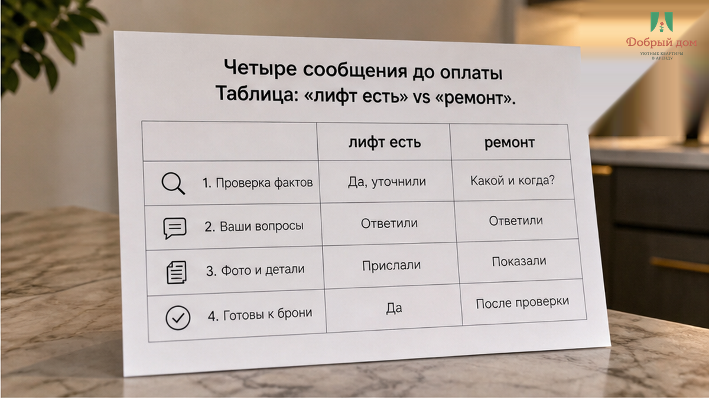
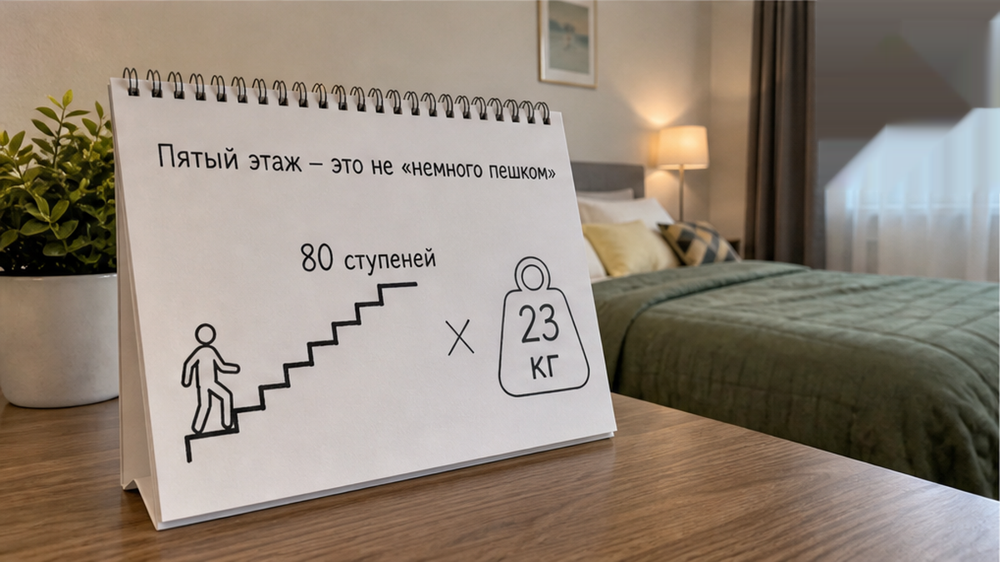
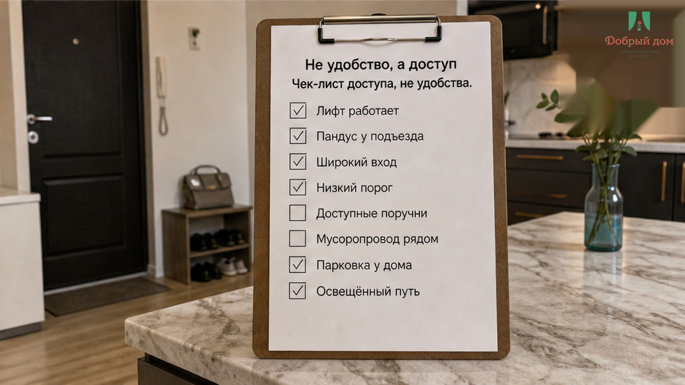
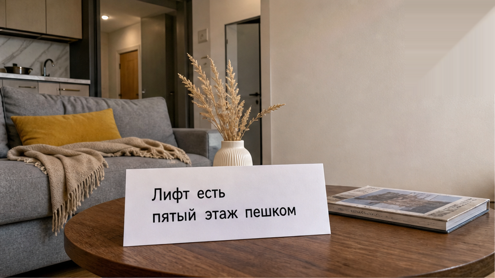
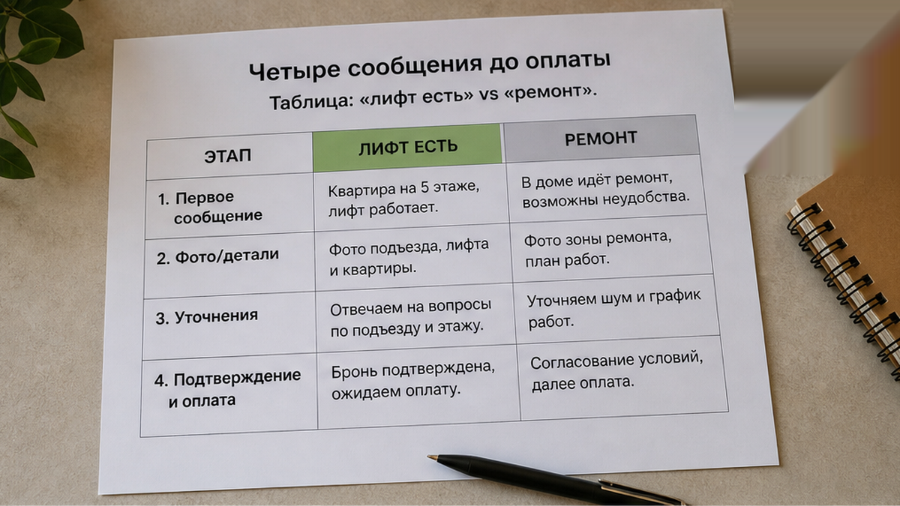
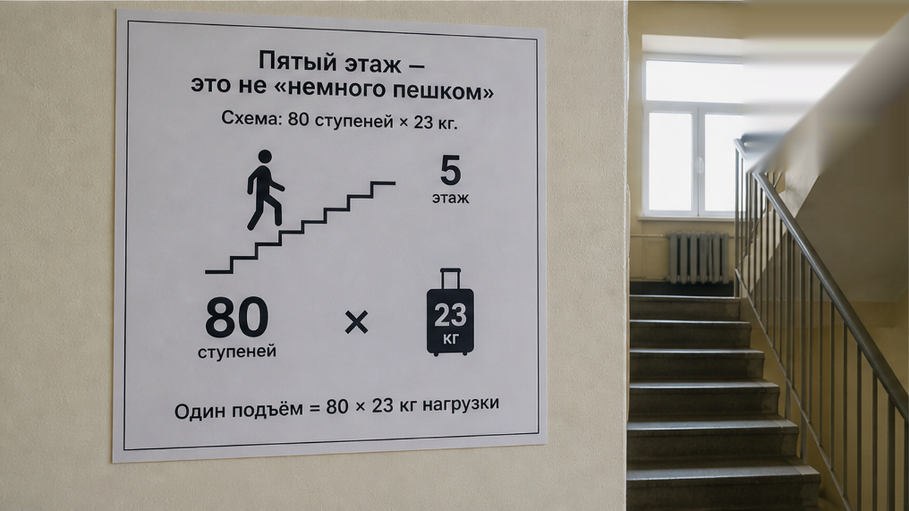
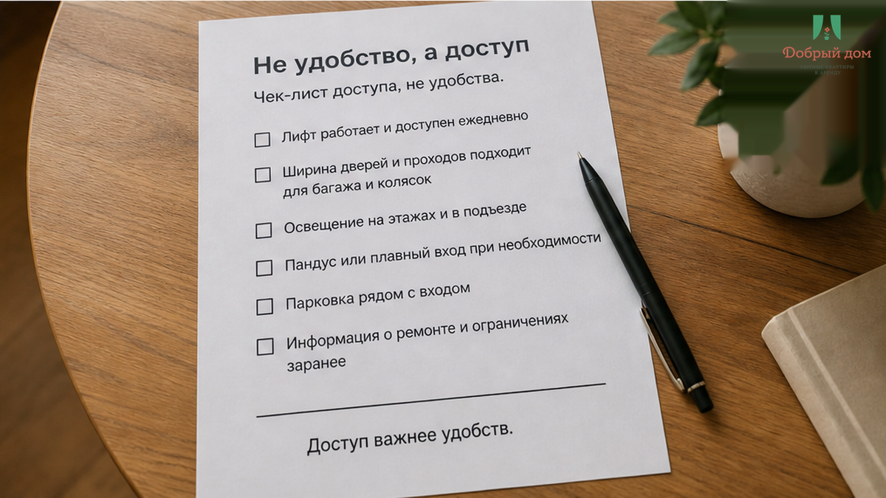

«Лифт работает, не переживайте» — это было последнее сообщение перед переводом 8 400 ₽ за две ночи. Ранним осенним утром, после ночного поезда, гость вошёл в подъезд и увидел лист А4 на скотче: «Лифт не работает. Ремонт». Квартира — пятый этаж. Чемодан — 23 кг. Ответ хоста пришёл, когда человек уже стоял между вторым и третьим: «Скоро починят, поднимитесь пока пешком».
Сломалось не железо. Сломалось слово. В объявлении было честное «лифт есть»: шахта есть, кабина есть, табличка с грузоподъёмностью висит. Но сегодня кабина не едет. «Лифт есть» и «лифт работает в день заезда» — разные вещи. Гость заплатил за вторую.
Я хост посуточной в Тюмени. Это «Добрый дом». Пишу о том, что видел сам и разбирал в чатах: Telegram · MAX.

Гость сделал всё правильно: спросил заранее. Переписка заняла минуту.
— Добрый день. Квартира на пятом этаже, лифт есть? Еду с большим чемоданом, почти сутки в дороге.
— Лифт работает, не переживайте.
— Хорошо, бронирую на две ночи.
— Жду, адрес пришлю.
После заезда слова стали другими.
— В подъезде объявление: лифт не работает, ремонт. Я внизу с 23 кг.
— Скоро починят, поднимитесь пока пешком.
— Скоро — это сегодня? Завтра? До какого числа ремонт?
— Не знаю, УК вешала объявление.
Вот где видна цена фразы «не переживайте». «Лифт работает» — утверждение про сегодняшний день. «Скоро починят» — не срок, а интонация. В интонацию нельзя поставить чемодан.

От двери подъезда до пятого этажа — примерно восемьдесят ступеней. Двадцать три килограмма по этим ступеням — не просьба «поднимитесь пока пешком». Это грузовая работа для человека, который только что приехал ночным поездом.
И не один раз. За две ночи были заезд с чемоданом наверх, спуск за продуктами, подъём с пакетами, выход с мусором, возвращение, выезд с тем же чемоданом вниз. Шесть проходов по лестнице, два — с полной загрузкой. Это не то же самое, что пройти три остановки пешком с чемоданом по ровному тротуару: там работают колёса. На лестнице они становятся лишним весом.
За одну ночь гость отдал 4 200 ₽. За две — 8 400 ₽. Он покупал квартиру и нормальный доступ к ней, а получил ещё физическую работу, о которой не договаривался.

Иногда в таких историях говорят: «Ну лифт же не кровать и не горячая вода, мелочь». Нет. На пятом этаже лифт — не бонус к интерьеру. Это способ попасть в оплаченную квартиру со своими вещами.
Если доступ сломан, ломается весь заезд. И важнее денег здесь право выбора. Узнай гость о ремонте до перевода, он мог взять квартиру ниже, выбрать другой дом рядом или приехать налегке. Вместо этого он узнал правду у подъезда, когда вариантов уже не осталось.
Хост мог не хотеть обмануть. Лифт работал годами, объявление о ремонте он не видел, ответил по памяти. Но гостю не нужна постоянная характеристика дома. Ему нужен статус на сегодня. Так же, как в истории, где хозяин сказал «всё включено», а за такси доплатили 2 400 ₽: слова могли быть искренними, но их не проверили. Искренность не носит чемоданы.

Если лифт встал на ремонт, хост обязан написать об этом гостю до оплаты — или это форс-мажор, за который никто не отвечает?
Мы считаем: обязан. Не из вежливости, а потому что это часть заезда. Хост не отвечает за кабину, но отвечает за то, что знает или обязан проверить перед тем, как подтвердить человеку дорогу с багажом на пятый этаж. Если видите иначе — спорьте с нами в Telegram или MAX.

Если в нашем доме ремонт лифта и гость едет с тяжёлым багажом наверх — пишем об этом до перевода. Если человек всё равно хочет заехать, предупреждение остаётся в переписке. Не после ключей, не с площадки между этажами.
«Разберёмся на месте» здесь не работает. С 23 кг на пятом этаже разбираться будет гость, а хост будет читать сообщения снизу. Та же логика действует, когда код сработал, а ключница оказалась пуста. Гостю всё равно, где именно произошёл сбой. Ему нужно попасть внутрь. Доступ — это и есть услуга.

До перевода спросите без смягчений: «Лифт сейчас работает или ремонт до какого числа?»
Этот вопрос не оставляет места для «не переживайте». В нём нужен конкретный ответ: работает и когда проверяли — либо ремонт и до какой даты. «Вроде работает» тоже ответ, просто после него лучше не переводить деньги вслепую. Сохраните переписку: не для скандала, а чтобы память потом не спорила с фактами.

Сначала проверка. Потом перевод.
Объявление описывает дом. Чат описывает сегодняшний день. Платить надо за второе. Лифт, про который сказали «есть», но не сказали «едет», похож на нарисованную дверь: выглядит как выход, а ведёт в стену.
Наш вывод простой: если собираетесь в Тюмень и не хотите проверять чемодан на восьмидесяти ступенях, спросите заранее. Мы ответим честно — включая «сегодня к нам лучше не надо».
Связь: Telegram · MAX · бронь · тел. +7 993 574-83-22 · менеджер @Dobriy_dom_Tyumen.